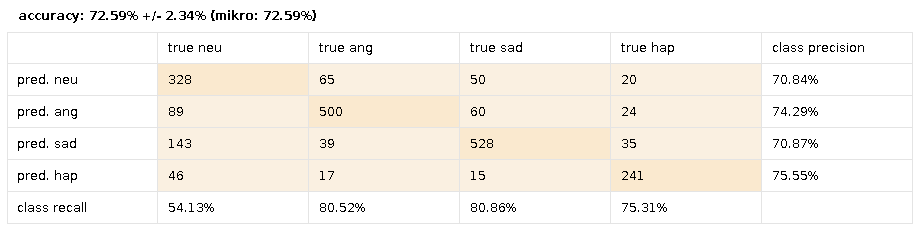

random forest
e
decision tree
 descrivere:
descrivere:
action unit: cosa sono, paul ekman
- tecnica utilizzata : clmz(distanze + action unit) + svm(e altri classificatori)
-descrizione dataset (abbiamo preso video da youtube , annotati da 3 persone, presi quelli di 2; fra i video annotati ne sono stati selezionati 200 with the following class distribution: 50 happiness...
-risultati( tabella con accuracy vari classificatori, + matrice confusione risultato migliore+ commento matrice,precision and recall)